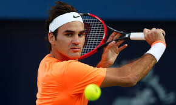
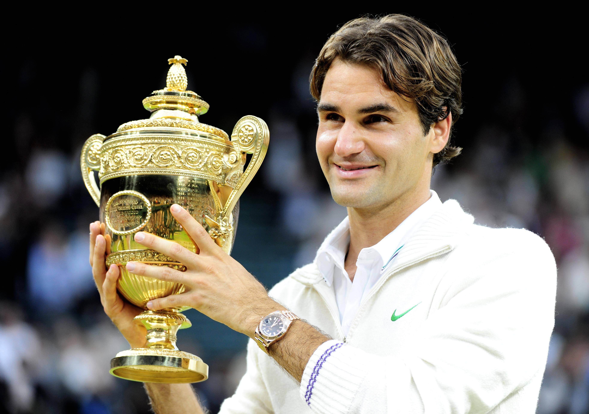
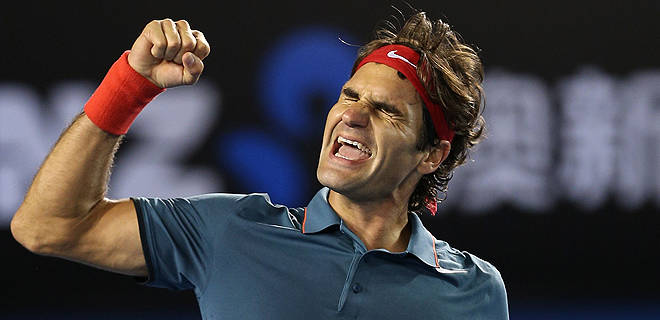
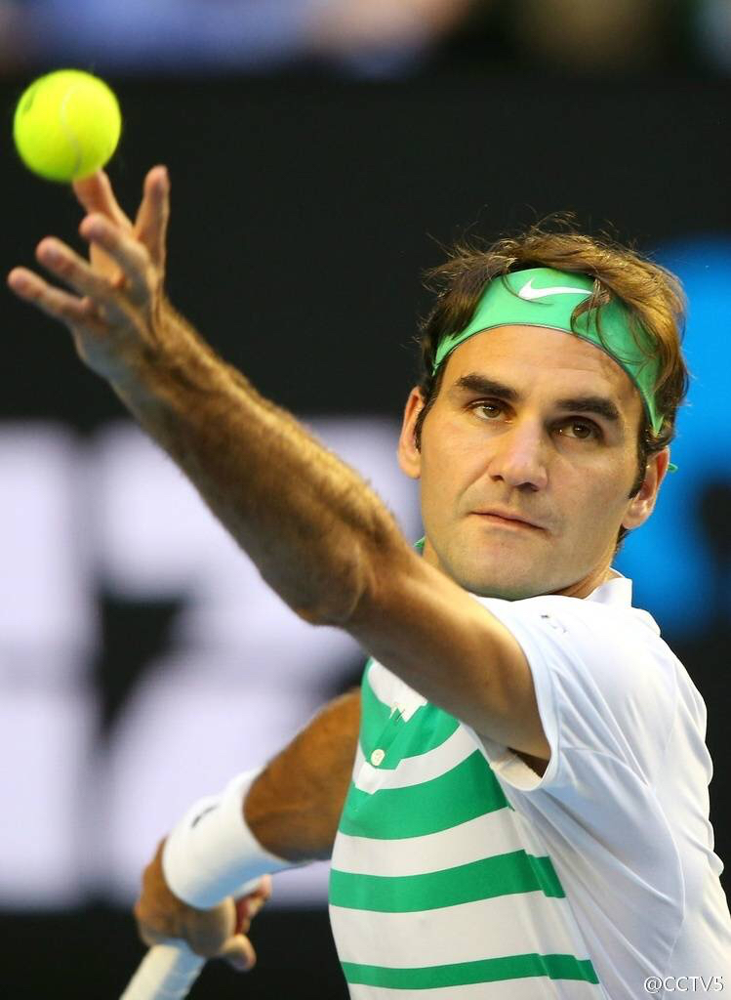

 Roger Federer (Federe's Official Site) is a tennis player who is considered a true legend in the sport. The 34-year old Swiss has played 27 Grand Slam finals and won 17 of them in his 17 years (so far) of professional career - 7 times in Wimbledon, 5 times in the U.S. Open, 4 times in Australia and 1 time in French. Federer holds the record of the most titles in the Grand Slam in the open era, and he is heading towards his 18th title right now in Melbourne, Australia, where he has entered the semi-final.
Federer is known for his versatility in the court. Even as his stamina is declining as he is approaching the end of his career, Federer can still rely on his power serves, and incredibly sophisticated net skills. Unlike some other players during his time, Federer could not only win the games, but also does so in an elegant, pleasant-to-watch manner which attracts millions of fans.
At the age of 34 - "old" for a tennis player, Federer focuses more on enjoying the games rather than merely winning titles and breaking records. It saddens his fans sometimes to see him losing to the younger generations - Djokovic, Murray, or even Berdych, however, aging is an inevitable process and Federer himself doesn't seem to be bothered much by his defeats. After declaring his "passion for this sports", Federer promises to come back next year after losing to Djokovic in the U.S. open's final.
Federer is about to face the current world number one once again this Thursday. Among their numerous duals, Federer has also been able to perform at his best level even in the ones that he lost. Some hard-core fans might even remember his game against Djokovic in the 2014 Shanghai Master, where he finished a game in only 47 seconds by serving 4 aces consecutively against the best returner in the sport. Fans are hoping the adoption of a larger racket and the changes of style that comes along could help Federer discovers a way to top Djokovic again in the semi-final in Melbourne.